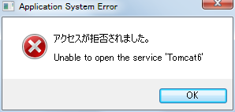
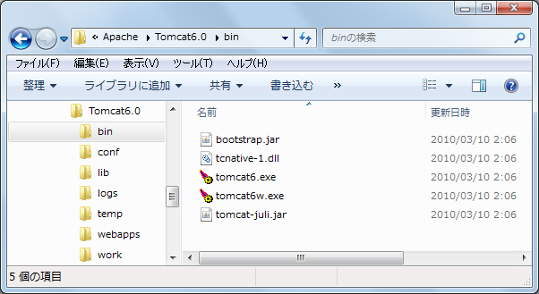
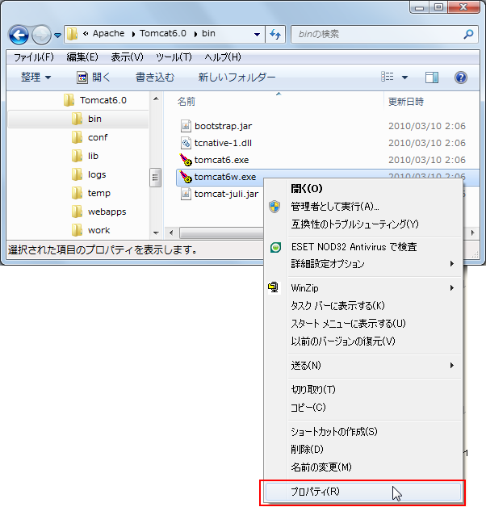
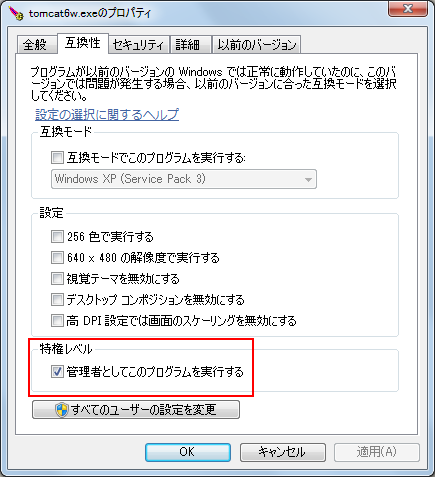

エラーが出た場合の対処方法 Unable to open the service 'Tomcat6'
広告
Tomcatをサービスとして自動で起動している場合に次のようなエラーが出る場合あります。
アクセスが拒否されました。
Unable to open the service 'Tomcat6'
Unable to open the service 'Tomcat6'

全ての原因が同じかどうかは分かりませんが、私の環境の場合はTomcatそのものというよりもTomcat Moniterの方でこのエラーが表示されているようでした。UAC(ユーザーアカウント制御)に関係した問題のようなので、管理者権限で実行するように設定します。(UACについては「UACに関連する設定」を参照して下さい)。
対象となるプログラムのファイルは「(Tomcatをインストールしたディレクトリ)¥bin¥」ディレクトリに含まれています。

「tomcat6w.exe」の上で右クリックで表示されるメニューの中から「プロパティ」をクリックします。

「互換性」タブの中の「特権レベル」にある「管理者としてこのプログラムを実行する」にチェックを入れます。

これでエラーは発生しないようになりました。
( Written by Tatsuo Ikura )
Profile

著者 / TATSUO IKURA
初心者～中級者の方を対象としたプログラミング方法や開発環境の構築の解説を行うサイトの運営を行っています。